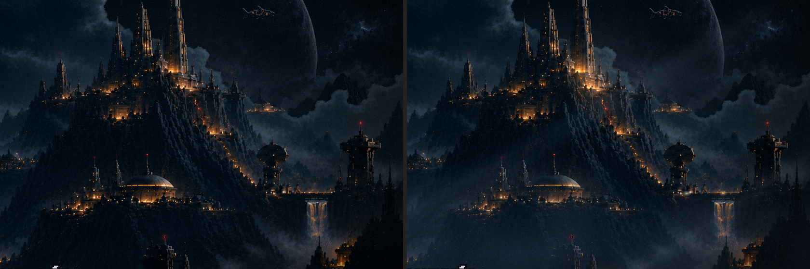
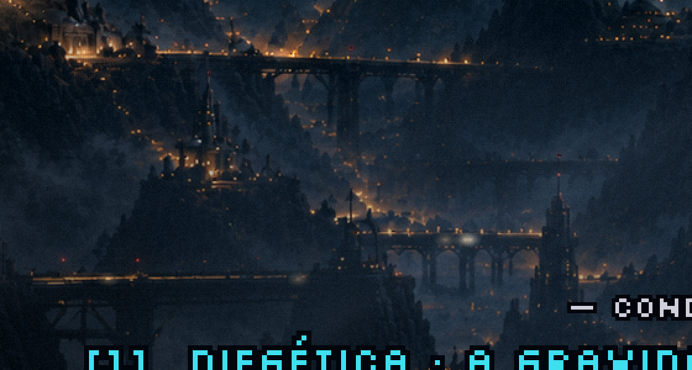

Menu refeito · rodada 4 · o volume
19/10/2026. ← rodada 3 · As suas escolhas: a resolução da pintura, o Leviatã de 96 px, a travessia de 45 s. E os seus pedidos: o tratamento inteiro das fases e cutscenes só no cenário, o texto nítido por cima de tudo, e o tráfego como luzes embaçadas.
O menu
O que entrou
O tratamento das fases e das cutscenes não é só a Atmosfera. O "volume" delas vem de mais três peças, e agora as três estão no menu:
- A bruma em camadas (a das fases): cinco faixas de névoa no vale, correndo para a esquerda em velocidades diferentes. É a diferença de velocidade que vende o volume. As duas mais rápidas passam na frente das luzes e das pontes. Uma sexta faixa, mais distante, fica na janela do céu: atrás da cidade e na frente do Leviatã, que passa por dentro dela.
- Os fachos de luz (os das fases): três fachos frios e fracos, vindos do lado aceso do planeta, atravessando a névoa.
- A volumetria (a da cutscene 2): um halo grande e macio respirando sobre as cinco luzes mais fortes da cidade, e um facho âmbar raro saindo das duas mais fortes.
- A Atmosfera continua: névoa pontilhada, halo nas luzes quentes, cor, vinheta, grão e poeira.
A bruma e os fachos foram redesenhados na resolução da pintura, com a mesma receita e a mesma semente das fases. Ampliados, viravam blocos.

As luzes de longe

O texto
O título, a lista e as conduções ficam numa cena própria, por cima de tudo, fora do tratamento: nenhuma névoa, grão ou brilho passa sobre eles. Na versão final continua assim.
A resolução no seu monitor teste no seu PC
O único custo é esse: em telas mais largas que 1582 px, o navegador amplia a pintura um pouco e ela fica levemente mais macia. Em Full HD a ampliação é de 21%. Nada quebra nem distorce.
Como testar agora: abra a página de teste e aperte F11. Ela estica o vídeo de 1536×864 para a sua tela inteira, do jeito que o jogo faria. Se ficar bom para você, seguimos assim.
para decidir
- O volume: a bruma, os fachos e os halos estão na medida, ou quer mais ou menos de algum?
- O tráfego embaçado ficou como você imaginou?
- A resolução no seu monitor, depois do teste.